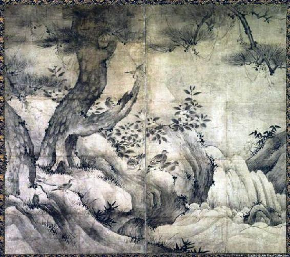

| 赤い花・白い花 / Alfa Romeo156: アルファロメオが登場する小説 | |
| 森田 徹 | |
| (2017) | |
＊＊アルファロメオが登場する小説＊＊
赤い花・白い花
第一章／紗季子
「このところ落ち着いているようですね。夜も眠れているみたいですし」
その医師は目の前の、やや背中を丸めちょこんと座っている、若い小柄な美しい女性にそう声を掛けた。
「・・・・はい。薬を変えてもらってから・・・」
それでも表情は無理に作っていることは医師、矢川の目には明らかだった。
「それではもう少しこの薬で様子を見てみましょう。いいですね？」
その小柄な若い女性は矢川の目を見ることができないまま、小さくうなずき
「・・・・ハイ、いいです」と、それでもはっきりとした声で返答した。
矢川はカルテの入力を終え、腕時計を見た。時計の針は11時半になるところだった。
白衣を壁のハンガーフックに掛け、近くにいた看護師に早めの昼にすると伝え診察室を出た。
彼は事務局に向かい、奥の部屋のドアをノックもせずに開け、こう声を掛けた。
「やぁ、林田さん。少し早いけれど昼飯にしませんか？」
「うん、そうだな。俺も取り敢えず時間が空いた。それに今なら食堂もまだ行列ができていないだろうし」
林田と呼ばれたその男は、この病院の事務長職を任ぜられた50代後半の男だった。
「さて今日のランチはなんだ？なになに、銀鱈の西京焼きと和え物、根菜の煮物と澄まし汁、そしてご飯か。まぁ健康食だな。これだと600kcal程度だろうな」
「我々にはちょうどいいけれど、医局の若いヤツらにはちょっと物足りないかもしれませんね」
医師と事務長で話す話題など取り立てて面白い話はない。子供の就職のこととか妻の買い物のことぐらいだ。
しかし林田には妻はいなかった。いや決してずっと独り身でいたわけではなかったが、別れた理由はつまらない行き違いからだった。
「おや？あの子。ここでお昼ごはん食べてるのか」
先ほど診察に来たその若い女性、竹内紗季子が食堂の隅で一人で食事をしているのを矢川は見つけた。
「林田さん。あそこに座っている女の子、先月から私が見ている患者だ。非常に優秀な才女なのにどうも世の中っていうのは非情なところがあるね。その感性と表現が他人との協調性に欠けてる程度の個性と呼ぶべきレベルじゃないかと俺は思う。ところが彼女は思春期を迎えてからその食い違いを常人との精神的な相違と誤解して、それが蓄積された結果軽いうつ傾向にある。私が思うには非常に繊細な心を持っている女性で、だから余計に精神面の成熟度が不足しているだけだと思うのだけど」
「ほう。事務屋の俺には難しい話だ。もう少し簡単に言ってくれ」
「う～ん、そうだな。例えば美術、絵画、造 形、歴史、それらの対象に常人以上の感じ方と理解力、いやその人独自の理解力だが、を持っているって思ってくれ。だから興味を持つ様々な対象物を自分の頭の中できちんと完結できている。ところが、いや、だからこそ、個の形成が偏ってしまうことになるんだ。知らない人から見れば彼女は非常識な人間だと思われるかもしれない」
林田はそういうことがあるのかと少し箸を休めて言葉を探したがうまく言葉にならず、午後から出向くメインバンクの営業部長との遣り取りを上手いこと進めなければならないことなどを話題にし、昼飯を終えた。
昼休みを終えた林田は洗面所で歯磨きをし、髪を直しネクタイを整えて自分の車を停めてあるパーキングへと向かった。
業務で出かけるのだから本来は法人所有の業務車両で出向くのであるが、林田はどうもあのCVTとかいうトランスミッションが好きになれず、その上接地感が乏しいのに出足だけ俊敏なセッティングも彼の好むところではなかった。
彼の愛車はアルファロメオ156。もう15年以上も前の車だったが彼はこの前に乗っていたメルセデス190E・2.6からこのジャジャ馬に乗り換えた。
メルセデスと比べ、このアルファロメオという車は、あちこち手を入れなくてはならない面倒な車であることは確かだった。
しかし長く付き合えば付き合うほど引きこまれていくような、そんな不思議な魅力を感じさせる車だった。
もしかしたら本当に愛した女性と暮らすことっていうのはこういう感情なのかもしれないと、結婚に失敗した林田は感じていた。
「おや？あの娘は」
林田の156をジロジロと見ていたのは、先程矢川から聞いた若い女性患者のようだった。
「どうしました？私の車に何か御用ですか？」
「・・・・かっこいい車ですね。乗せて下さい。車の中も見たいです」
林田は突然の申し出に少したじろいだがすぐに取り直し、こう告げた。
「えぇ、かっこいいでしょ。自分でも気に入って長く乗っているんです。ただ、これから仕事で出かけなくちゃいけなくて急いでいる。約束は必ず守るから、また会える日と時間をきちんと決めておこう。それでいいかな？」
「・・・・こんど、私は再来週の火曜日に、矢川先生のところに来ます」
「よし。ちょうどいい。私は再来週の火曜日は午後から休みだ。午後2時にまたここに来て下さい。そしたら貴女をお乗せ出来る」
そう言うと林田はドアを開けて乗り込み、紗季子を残したままゆっくりと走りだした。
『矢川から聞いてはいたが、ナルホド変な子だ。でも常人からは理解されづらい俺の車に興味を持つなんて、そういう意味では俺と同じ仲間かもしれないな』
林田は彼女と自分を引き寄せて理解したことを自分でも不思議な気持ちがしたが、大通りで車の群れに合流した頃にはそれも忘れていた。
第2章／もうひとりの自分
突然の巡り合わせに約束をした林田だったが、これは否応なく起きた事故のようなものだと回避できなかったことを自分なりに解釈した。
半休にしてあった火曜日はその理由があり、この日は日比谷にある美術館に特別展を見に行く予定だった。
「やあ、こんにちは。具合はどう？ 矢川から紗季子さんのことは少し聞いた。もし途中で気分が悪くなったら遠慮無く言ってくれ」
「・・・・はい。多分大丈夫。薬、良く効くし」
「そうか、それならいいんだが無理はしちゃダメだぞ」
「・・・・約束守ってくれてありがとう。迷惑かけてるよね・・・」
「いいんだよそんなこと。俺の方から約束させたんだから守って当然だ」
林田は立体のパーキングを下り、車を晴海通りへと向け、しばらくすると隅田川を渡る勝鬨橋に差し掛かった。
「・・・・バスは嫌い。この橋はいつもは歩いて渡るんだ」
「・・・・自分の足元をすごく広い川が流れてるって不思議」
「・・・・空中に浮いてるみたいだからこのまま飛べそうな気がして気持ちが晴れるんだ」
「・・・・時々トンビも飛んで来る。餌は何をたべてるんだろう」
「・・・・ああやって翼を広げてゆっくりと飛んでいるの羨ましい」
感情を表情に表さずにポツポツとしゃべる紗季子を横目で見ながら林田は「ふ～ん」とだけ返事をし、この話はそこで終わってしまい続くことはなかった。
やがて東銀座を過ぎ、二人を乗せたシルバーの156は日比谷交差点で皇居のお堀に出て右折し、そして帝国劇場ビルへと向かった。
「・・・・劇場の上に美術館があるなんて変」
紗季子は相変わらず表情を変えずにポツリと呟き、林田は「そうだね」とだけ答え、向かいのビルの地下駐車場へと車を滑りこませた。
林田の見たかったのは狩野派の絵画を時代別、作者別に分けて展示した特別展だった。
紗季子は日本の絵画にも興味を持った時期があったらしく、林田は日本の御用絵師についてこんな若い子と会話をするなんて夢にも思わなかった。

展示してある絵画や屏風など一つ一つに足を止め長い時間を掛けて鑑賞していた紗季子だったが、この「伝狩野元信筆 老松小禽図屏風」の前に来た時、彼女の足が止まった。
「どうした？この屏風が気に入ったのかい？」
林田は今度は紗季子の顔を正面から覗きこむようにしてそう訊ねた。
紗季子は林田に一瞥をくれること無く、その魅力的な瞳は屏風を食い入る様に見つめ、そしてやおら今までとは違った喋り方で感想と意見を述べ始めた。
「・・・ この絵、不思議な感じがするの。今は展示の為に平たくされてるけど、障壁画っていうことは本来少し折って立てるのでしょ？そうすると左の幹は左手前に近寄って、右の枝は右手前に近寄って見えるはず。ちょうど右雙と左雙の中央上部に見切れて描かれていない太い枝が頭上に横たわるってことよね。
当時は遠近法という概念は無かったはずなのに、もしかしたら三次元的な配置をすることで二次元の屏風に描かれた風景にリアリティをもたせる技巧的処理を狙ったってことかな。日本人て異常だわ」
面白いことを言う娘だと、林田は感心した。そしてさっきまでと違って一気に喋ったことに少し驚いたのも事実だった。
彼が狩野派の絵画を好むのは、元来中国の宋元時代の模倣から始まり、やがて日本独自の絵画へと昇華させた狩野一族の持つ日本的な審美眼に惹かれたからだった。
そこには確かに遠近法という概念はまだ生まれておらず、水墨画独特の滲みやぼかしなどにデフォルメを加え、後世の印象派なども模索していた光と空気を既に描いていたことこそが林田の心を惹きつけていた。むしろ積極的に描かないことで饒舌な絵画を表現するという、我が国独自の技法を感じ取れるこの若い女性に感 心した。
面白いことを言う娘だと、林田は感心した。そしてさっきまでと違って一気に喋ったことに少し驚いたのも事実だった。
彼が狩野派の絵画を好むのは、元来中国の宋元時代の模倣から始まり、やがて日本独自の絵画へと昇華させた狩野一族の持つ日本的な審美眼に惹かれたからだった。
そこには確かに遠近法という概念はまだ生まれておらず、水墨画独特の滲みやぼかしなどにデフォルメを加え、後世の印象派なども模索していた光と空気を既に描いていたことこそが林田の心を惹きつけていた。むしろ積極的に描かないことで饒舌な絵画を表現するという、我が国独自の技法を感じ取れるこの若い女性に感 心した。
「そうだね。そんなこと今まで考えたこともなかったよ。やはり矢川の言うのは正しいね。貴女は非常に興味深い感性をお持ちだ。今まで室町や鎌倉時代の日本絵画に触れたことはあるのかい？」
「・・・・画集でパラパラとめくって見る程度でしたら見たことがある」
「・・・・でもやはり本物は写真とは違う。多分初めて見たと同じこと」
と、ここでまたブツ切りの話し方に戻ってしまった。
林田は彼女との会話の入り口をどこに求めればよいのか考えあぐねていた。
「俺はね、ホームページで狩野派の絵画について取るに足らない私見をつらつらと書いているんだ。是非紗季子さんにも見てほしいな。できれば感想などもコメントしてくれると有り難い」
そういうと林田はスマホで自分のホームページを検索し、一昨日アップした記事を紗季子に見せた。
『俺は一体どうしたっていうんだ。156に興味を示してくれる若い女性だからって、そんなことで親しくなるのは変だぜ。それとも何かオレの琴線に触れるってやつか？わからない。いい年してるのにかまってくれる若い女の子が欲しいっていうのか。そりゃ益々変だ』
結局美術館では4時間ほど過ごしたが、この美術館で4時間なんて鑑賞時間は最長記録だった。
紗季子の興味はデザインや画風のみに留まらず、描かれた時代背景や権力者の相関図まで俺に訪ねてくるほどだった。
おかげでこっちも絵画に対峙の仕方を改めて考えさせなおされたと言えなくもないが。
いやはや面白い。矢川の見立ては大したものだ。
林田は自分と遊んでくれたお礼に夕飯くらいご馳走しなきゃなと思い、車を銀座へと向けた。
・・・・・・翌日・・・・・・・
「全く林田さんにも驚かされる。自分の病院の患者さんと、しかも二回り近く年が違うっていう若い女の子と美術館でデートしたなんて。独り身だからってあまり奔放な行動はまずいぞ。病院内ってのは変な噂はあっという間に広がるからさ。気を付けなよ」
翌日出勤すると矢川は林田に向かって、こんな忠告ともやっかみとも聞こえるような言葉をかけた。
「あぁ、 わかってる。気を付けるさ。ただ彼女の精神構造をお前から聞いいていただろう？約束を破ったらまずいと思ってね。引率みたいなもんだったけど、美術館の後は夕飯を一緒に食って新橋駅まで送っていったよ。もともとはオレの車に乗ってみたいっていうのが彼女の目的だったから首都高を少し流してさ、芝公園あたり ではライトアップされた東京タワーを不思議そうな顔で見てたっけ。ただ面白い子だなって感じたのは絵画の印象を聞いた時だ。お前の言うとおり勉強も嫌い じゃないし理解力も高い。そして感受性が強く感性は鋭いね。狩野派を研究しているって自負してる俺でさえ感心して意見を求めたこともあったほどだ」
「だろう？おれは別に安定剤や睡眠導入剤を処方する必要性はそれほど感じていないんだ。ただ、自分の気持ちが自分の神経を過敏に刺激してしまっているところがあって、それを抑制するにはある程度の薬剤の摂取は必要かなと思って処方してる」
「矢川、俺は医者じゃないからわからないんだが、その過敏に刺激している部分っていうのを薬剤ではなくて別な方法で抑制もしくは緩和させる手段は考えられないか」
「そ うだな。例えば彼女なりに受け入れられるような恋人を作ることかな。互いに良き理解者になれるような恋人を作れば少なくとも不安感や焦燥感は抑制できる。 他の誰の言葉も受け入れられないような精神状態のステージに落ちても、恋人の言葉まで拒絶するようなことは無いと思う。なぜならその彼は彼女自身でもある はずだからさ。そんな彼がいればステージを上げ、維持向上させることも可能性としては考えられるな・・・・って、お前まさか」
「いや、ちょっと気になっただけだ。それだけだ」
あの日以降、林田は紗季子のことが気になって仕方なかったのは正直な気持ちだった。
二回り近く年が離れた紗季子を男女の関係で考えることは無かったが、156のデザインのことや初めて見る屏風絵を自分なりに直感的にそして独創的な受け入れ方をした彼女のことを思うと、もしかしたら自分に徹底的に欠落している物を彼女は持っているのではないかと、その人間的な魅力に惹かれ始めていた。
軽い気持ちで言ったホームページへのコメントも時々書き込んでくれている。それも一度読んだだけでは彼女の本意が図りかねるような文章で。
難解な心理を読み解くようなコメントは、これもまた林田の心情的興味を大いに奮い立たせることになっていた。
「不思議な女の子に出会ったもんだ」
林田はそうつぶやくと事務局の部屋へゆっくりと歩を進めた。
第3章／互いの距離
美術館に紗季子と出掛けてから三ヶ月が経つ。
林田は4日に一度くらいのペースで自身のホームページに記事をアップしていたが、紗季子は必ずコメントを入れてくれるようになっていた。
相変わらず彼には難解な表現で、もしかしたら彼女のほうが自分よりも絵画に対する観察力と審美眼は上なのではないかと感じ入るコメントも少なくなかった。
そんな林田は自分の方から紗季子ともう一度会いたいと強烈に感じ始め、思い切って矢川の診察室へ向かった。
「お前も大概にしておけよ。竹内さんは診察で2週間に一度、火曜日の午前中に来るけどね。この頃彼女変わったぜ。お前まさかこの前俺が言った改善方法を実践しようとしているんじゃないだろうな」
矢川は半ば呆れ顔にそう言った。
「恥ずかしい話だが、もしかしたらそうかもしれない。聞けば彼女はそこそこ有名な出版社のwebデザイナーだって言うじゃないか。今事務局ではホームページと パンフレット等の作り変えを企画してる。法人内にwebデザイナーなど居ないし、今まで付き合いのあるデザイン会社も悪くはないが、俺は今回彼女をうちの 部署に来ないかって誘ってみようと思っているんだ」
林田の務める医療法人は半年前に経営不振に陥った医療機関を吸収し、それまで不得手だった血液腫瘍科を充実させることができたのだった。
それを契機に病院内の組織体制の見直しを図ることになり、先ず手始めに今期は旧態然としたホームページ等を刷新するべく林田は取り組んでいる最中だった。
とは言え事務局は慢性的に人材が不足しており、この作業は遅々として進んでおらず、また外部のデザイナーとの遣り取りは隔靴掻痒のジレンマを感じているところでもあった。
「メインバンクの部長からは、巨額な資金を投じたM&Aだからこの血液腫瘍科の充実をもっと喧伝して、少なくとも5年後には投入資金を回収してくれと 俺は釘を刺されてる。だからまずこのホームページの変更をその足がかりにしたい。それには誰もが気を惹くビジュアルにしたいんだ。だから彼女の力を借り て・・・」
「ま、分かったよ。それはお前の仕事だからな。俺には振ってくるなよ。明日彼女が来たら事務局へ行ってくれって頼んでみるよ」
＊＊＊＊＊＊＊２ヶ月後＊＊＊＊＊＊＊＊＊
「どうですか、竹内くん。あなたが満足できる仕上がりになってきたかな」
林田は理事会でメインバンクからの要求、今後10年間の予想される法人全体の損益計算書、血液腫瘍科の持つ将来性などを訴え、半ば強引に竹内紗季子を社内に引っ張り込むことに成功した。
「非常勤という身分ですまないな。でも今期これで評価を得られれば竹内くんは常勤職員への道が開ける。それに俺だって銀行に首根っこを押さえつけられているんだから、竹内くんと運命をともにする覚悟をしなきゃいけないと腹をくくってるけどな」
「・・・・事務長さんって大変だね。わたしは幸せだよ」
「・・・・こんなに凄いこと、わたしがやってもいいのか、って思う」
「・・・・毎晩寝るときには明日もこのままの続きでありますように、って祈ってから寝てる」
「そうだ、その通りだ。今日は明日へ続くんだ。だから今日ほんの少しだけ変わればいい。そうすれば明日はそのほんの少し変わった所からのスタートになる。そうやって毎日少しづつでもいから着実に高みへと登っていけばいい。いつか雲の上に出ることが出来るさ。そこは晴れ渡った青空が広がっているに違いない。竹内くんが思う、感じるそのままの、この病院の素晴らしさを表現して欲しい。頼むぞ」
林田は仕事を通じて紗季子に自信を持たせ、閉じた心を解きほぐすことが出来るのではないかと、矢川から聞いた方法を実践していた。しかし問題は「彼」にならなきゃいけないってことだったが、上司と置き換えればそれも可能ではないかと決めていた。
「・・・ケツはいつ？ クリスマスに間に合えば平気？」
「ケツってなんだ？あぁ締め日のことか。そんな言い方、若い女性がするもんじゃない。ま、年明けには新年の手土産代わりに銀行にプレビューを見せたいな。もしクリスマスまでに間に合えば有り難い」
紗季子は独身だと聞いていた林田は、毎週金曜日の夜だけは紗季子を食事に連れて行った。
「さてもう7時過ぎだ。そろそろ今週は終わりにしよう。飯を食いに行くぞ。準備してくれ」
「・・・・事務長さん。・・・・今夜はうちでご飯食べようよ。・・・・私作るから」
紗季子は俯向いて小さな声で、そしていつものようにブツ切りの喋り方でこう言った。
林田はといえば、思いもしない提案をされ、速くなる自分の鼓動を感じ、うろたえた。
「そ、それは光栄だ。竹内さんの手作りってことか。それじゃぁ途中で買い物していこう」
林田は変な緊張と興奮のためか、少々上擦った声でそう答えた。
当初から決めていたように彼女とは男女の関係など全く考えの及ばないところにあるし、それは今でも変わらない。
採用してみて改めて矢川の診察の的確さを感じるほど、彼女とコミュニケーションを取る難しさも分かった。
パーキングスペースから156を出す時には、慣れ親しんだはずのクラッチを唐突に繋げてしまい、紗季子の躰を不用意に動かした。
『何だこれ！俺はもしかしてあらぬことを期待してるのか。馬鹿なことを期待するもんじゃない。彼女は同僚で部下だ。それくらいの分別はお前にもあるだろう』
さすがにクラッチミートをギクシャクさせた自分に腹が立ち、林田は無礼を紗季子に小声で詫た。
恵比寿にある紀ノ国屋、エントレで買い物したいと紗絵子から言われ二人は車を降りた。
紗季子は何を作るつもりなのか全く教えてくれないまま無言でカートを押し、買い物は終わった。
チーズとワインとその他数点だけの買い物だったので、きっと彼女は冷蔵庫にストックしてあるもので料理をしてくれるのであろうと林田は理解した。
しかし今夜のこの出来事は完全に整理できないまま、彼は彼女に道案内をしてもらいながら紗絵子の住むマンションへとアルファロメオを走らせた。
地下の駐車場に車を滑りこませ、紗季子の指定する駐車スペースに156を停めた。買い物袋を林田が抱え、紗季子はセキュリティカードを使って鉄扉を開け内階段を上がり、二人で並んでエントランスへと歩いていった。
さすがに名のある出版社に勤めていただけあって、紗季子のマンションは一人で女性が暮らすには快適な住まいだった。
こんな状況は妻と別れてから初めてだった。何故かすっかり彼女のペースに巻き込まれていく自分を、どこか第三者的に見ているような現実離れした感じだった。
「車、勝手に停めて大丈夫か？」
「・・・来客用スペースだよ」
相変わらず無愛想な娘だ。林田は苦笑いしたことを気づかれないように、抱きかかえた買い物袋を覗きこむように下を向き、加速していくエレベーターの速さを感じていた。
部屋のドアを開けると彼女のコロンの香りがした。
「・・・・買い物のお金ありがとう」
「・・・・ここに座っていて。一時間もいらないけど、出来上がるまでここで待ってて」
「え、いやご馳走になるんだから支払うのは当たり前だ。それに料理、俺も手伝うよ。俺だって独り身だ。料理には多少自信がある」
「・・・・分かった。でもワイシャツとネクタイじゃ無理。着替え持ってくる」
あぁ、そういうことか。俺が着ることが出来る服が有るってことだよな。紗季子さんだって男友達はいるだろう、林田はそう思って自分を諌めた。
「・・・・これ、親父の。時々偵察に来るから置いてある。これに着替えて」
「あ、そうか。お父さんのか。ありがとう。じゃ、ここ閉めて着替えるよ」
林田にとって予想もしない展開が平凡な日常を彩ってくれた夜だった。
冷え込んできたこの季節に合わせたのか、紗季子が作ってくれたのはポトフとピラフ、そしてサラダとデザート。デザートは林田が決めてそっと買い物カゴへと忍ばせたものだった。
料理は手慣れた様子で、チラッと覗いた冷蔵庫も整理整頓されていた。ポトフは十分に躰を温めてくれてピラフはどちらかと言うと添え物程度の量目だった。二人で囲む食事はそれ以上に暖かかった。林田は久しくこういう感覚から遠ざかっていたため、妙に饒舌になっていた。
「・・・・事務長さんは650kcalくらいにしておきなさいね」
上目遣いで突然言われた時にはびっくりした。この子は冷静だ。
自分の感情に振り回されているのは俺の方だった。彼女は俺に出会ってからもきっと冷静なままだったに違いない。けれど俺はどうだ。彼女の父親のために用意された部屋着を着て飯を食い、不思議な少女に惹かれ始めてる。
今取り上げるべき問題は彼女の言ったカロリーではなくワインを飲んでしまったことだった。このままでは運転して帰れない。
すると紗季子は全く意に介せず泊まっていけという。来客スペースはいつも開いているから車の心配は不要だと。
いや、それも違う。そんなことを心配しているんじゃない。心配なのはオレの自制心だ。
食後の片付けも二人で行い、紗季子はデザートのためのコーヒーを淹れた。
「・・・・明日は休みでしょ、事務長さん。・・・ゆっくりしていっていいよ」
父親が偵察に来た時の為にソファーは簡単なベッドになるようだった。リビングにあるそれをベッドへと組み直しながらも紗季子は無表情だった。
ほろ酔いの林田は一人暮らしの女性宅から出るときのタイミングって難しいだろうなぁ、などとぼんやりと考えていた。
「あぁ、ありがとう。そうだ、その事務長さんっていうのはやめようよ。私の名前は林田亨。好きに呼んでくれて構わない。ともかく事務長さんっていうのは職場みたいで嫌だ」
「・・・・亨さんって呼ぶ」
あぁ、いつもこの娘にはこうやって驚かされる。亨さんなんて呼ばれるのは妻と別れてから何年ぶりのことだろう。
ベッドメイクを終わらせた紗季子は再び林田の前に座り、こう切り出した。
「・・・・ちょっとお話がある。少し長くなる・・・私の事」
「・・・・私幸せです・・・亨さんにうちの病院で働かないかって言われたこと」
「・・・・自分のこと自分で好きになれないのに、亨さんは私を必要としてくれた」
「・・・・病院には綺麗で優秀な人が沢山いるのに。亨さんなら選び放題なのに・・なぜ私のこと」
「・・・それに美術館に連れて行ってくれたし。アルファロメオにもいつも乗せてくれる」
「・・・優しいし、仕事のことと私の病気のこと、すごく理解してくれてるし」
「・・・矢川先生が言ってた。林田事務長は紗季子の味方だって」
「・・・でもわからない。どうして亨さんはそんなに私の事、気にしてくれるの・・優しいの」
「・・・いつも金曜日ご馳走してくれる。私、男の人とご飯なんて絶対駄目なのに・・亨さんなら大丈夫なの」
「・・今日は私がご馳走したかった。今までの感謝の気持ち。でもこんなので精一杯。本当の感謝の気持ちは約束通りクリスマスまでに仕事を終わらせることで示します」
「・ お店でご飯じゃ、嫌だった。うちでご飯、一緒に食べて欲しくて、心臓が爆発しそうだったけど、思い切ってお願いした。私この頃少しだけ、自信が持てるようになってきた。だから試してみたかった。断られたらどうしようって心配だったけど、今日少し変わればいいんだって、亨さんから言われて決心できた」
「今夜の事考えると、昨日の夜は眠れなかった。でもね、そんな時、亨さんの運転するアルファロメオの音と振動と独特な香りと、そして流れる景色を思い出したら、こころが穏やかになってきていつの間にか眠れたの。だってほら、亨さんにならこうやってこんなにたくさん喋れる。今までこんなに頭に浮かんだことを次から次へと口に出せたことなんて無かったのに、亨さんの前なら出来る。こんな自分が嬉しくて。それに働かせてもらえること以上に、事務局のドアを開けて亨さんがいるのを見るのが毎朝嬉しくて。朝が来たらまた会える、朝が来るのが待ち遠しいなんて生まれて初めてだった」
林田の目をしっかりと見つめながら一気に話し終えた紗季子は俯き、ハンカチで涙を拭い始めた。
林田はすっかり酔いが醒め、マンションに入った時の早鐘のような鼓動もおさまっていた。
彼は椅子から静かに立ち上がり、あの魅力的な目にハンカチを当ててしゃくりあげている紗季子の背後から、そっと両腕を回し抱きしめた。
『俺 は知っている。あなたが屏風絵のことを話した時のこと。あの時はきちんと長い文章で話していた。だからあなたは大丈夫だ。自分で自分のことを受け入れられ ていないだけなんだ。紗季子さん、貴女はもっと自由になれる。天上へと進んでいけるよ。勝鬨橋が気に入っているんだろう？あの大きな空へ、トンビのように 自由に羽ばたけるさ、自分の翼でね。そしていつか天の果実を手にする日が来る。あなた自身のその手でね。俺は少しはその手助けができると思う。いや、おそ らくあなたの手助けができるのは俺以外にいない。だから俺と一緒にいてくれ』
紗季子も静かに立ち上がり、そして林田の方へ向きを変え、二人は立ったまま長く抱き合っていた。
林田の鼓動が再び早くなるのには、それ程時間は必要としなかった。
第4章／赤い花・白い花
紗季子は予定通りクリスマス前にwebページを校了させ、林田は役員会へ提出し満場一致で了承を得られた。
シンプルなページ構成だったが、それだからこそ一般の方からアクセスしやすく、しかも紗季子の独特の感性によって選ばれた画像とレイアウトは旧来のwebページに比べ、この法人の目指す医療への真摯な取り組みと技術力ヘの興味を掻き立ててくれた。
このホームページはいくつかの企業から問い合わせを受けるほど注目され、有名な経済誌にも取り上げられ、その出版社が主催するwebページ大賞にノミネートされたほどだった。
年も開け、年度末が近づいた時、林田は理事長から声を掛けられ理事長室へ出向いた。
「林 田くん。お疲れ様。良いホームページになったじゃないか。アクセス数も前年同月比で310％を超えているそうだ。これも雑誌に載るほど注目されたおかげ だ。広告宣伝費を使わずに経済専門誌に4ページも取り上げられたことは波及効果が高いだろう。買い取った血液腫瘍科などは以前より患者数が3倍になったと 報告を受けている。銀行への挨拶には私も一緒に同行しよう。この調子でやってくれ。頼むぞ」
理事長室へ呼ばれた林田を待っていたのは満面の笑みを浮かべる理事長の歓待だった。
事実、血液腫瘍科だけではなく法人全体での売上はやはり昨対で127％、つまり3割増し近くの売上高を記録していた。
事務長という職は生産性が無いに等しい職種であるからこそ、法人全体の売上高や利益率を確保できるような働き方をしなければいけない、これが林田の信念だった。
「理事長、一つだけお願いがあるんです。前期の理事会で採用を認めて頂いた事務局の竹内ですが、今回の企画開発と好調な業績については、彼女抜きにしてはありえません。是非常勤の事務局職員としての処遇をお考えいただきたいのですが」
「林田くん、君には事務局長として職員全体の雇用管理を任せてあるんだ。その職員を常勤職員にした時にどれくらいの経費増になるかは君の職掌範囲だし責任数値だ。つまり私に許可など不要だ。君の判断に任せるよ。それにその竹内くんには私が礼を言っていたと伝えてくれ」
理事長の機嫌が良い時にこの話を持ちだそうと林田は機会を伺っていた。
まさに今がそのチャンスの時であったし、目論見通り稟議など不要のトップの決済をもらえることが出来た。。
林田は礼を述べ深々とお辞儀をして理事長室を後にした。
「やったぜ！竹内くん。来月から、いや遡及させて今月から貴女は当法人の事務局常勤職員とするよ。今理事長と会ってきたが、あなたの身分の変更については私に全て任された。だからもう決定だ。理事長からはあなたの奮闘に礼を言ってくれって言われてきた。おめでとう。本当によくやってくれたね」
林田はそう言って紗季子に右手を差し出すと、反射的に紗季子も右手を差し出して二人は固く握手をした。
「ありがとうございます。全て事務長のお陰です。矢川先生にも報告しなくちゃいけません。先生もずっと私の事、気にかけてくれていましたから」
「そうだ。今夜は三人で祝杯をあげようじゃないか。え～とどこにしようか」
「・・・・あの、二人で、じゃ・・・駄目ですか」
全くどうして俺ってやつは、こうも女性の気持ちを理解できないんだろう。
そうだな、まず二人でゆっくりとお祝いをして、矢川には昼飯でも奢りながら一緒に会えばいい。
きっと紗季子は男性二人と祝杯をともに上げるというのには、もう少し時間が必要かもしれない。
林田はそう思い、紗季子の常勤職員登用決定通知書を総務課へ提出に向かった。
「紗季子さん、おめでとう。これから益々仕事をお願いすることになるけどよろしく頼むね。乾杯！」
「ありがとうございます。webデザインは得意ですが、頂いた辞令には経営戦略室付きってありました。一体これってどんなお仕事をするところなんですか？」
ホームページのアップが終われば、いくら有能なwebデザイナーの紗季子でも、常勤職員に登用する条件が足りなかった。
それよりも林田は彼女の持って生まれた感性と審美眼を、この法人経営に役立てたいと考えていた。とは言え当面は林田の秘書のような仕事だが。
二人は明日の仕事に差し障りのない程度で酒盃を収め、早めに切り上げタクシーに乗り、林田は紗季子をマンションまで送って別れた。
紗季子がタクシーから降りる際、林田に向かって微笑み、会釈した。
美しい女性だ。手を降って見送る紗季子の姿が見えなくなるまで、彼はずっと振り返っていた。
・・・・・・・・・・・・・・・・・・・・・・・・・・・・・
「よ！色男！竹内さんを秘書にするなんてちょっと公私混同じゃないの？さもなきゃ職権乱用ってやつだ。憎いね、もう」
翌日矢川に報告すると、既に院内では紗季子の話は広まっていたようだった。
「ひでぇなぁ、そんな言い方ないじゃないか。理事長から許可を貰って行った人事だぜ。第一変な噂が広まりそうになったらおまえが率先して否定してくれなくちゃ困る。紗季子の心のステージを上げる手法はお前から教えてもらったやり方を使ったんだから」
「お！名前、呼び捨てかぁ。いいなぁそういうの。わかってるって、冗談だよ。ともかく俺も彼女におめでとうを言う機会を一席設けてくれよな。昼飯でも一緒に食うか？お前の奢りでな」
紗季子の名前を呼び捨てにしたことは失敗だった。ふたりきりでいる時には「亨さん、紗季子」と呼び合っていたので、つい口にしてしまったことを反省した。
あの日から林田と紗季子は毎週金曜日に紗季子の家で食事をし、林田は泊まっていくことが慣例となっていた。
いつからか彼は自分が紗季子を愛している事に気がついた。そして紗季子も林田を愛していた。
しかしそれは夫婦という呼ばれ方をされるような関係には発展せず、相変わらず別々のマンションで生活を続けていた。
「事務長、今日は金曜日。今夜も是非一緒に食事をしましょうね」
「すまんが先に帰っていてくれ。俺は今夜は理事会だ。遅くなると言っても8時までには終わるから、すぐに向かうよ。車はいつもの場所に停めればいいかな」
「そうか、つまらないの。アルファロメオに乗りたかったのに・・・でも仕方ないわよね、だって亨さんはこの法人の敏腕事務局長さんだものね」
「こら、亨さんはやめなさい。ここは職場だ。来期からはあなたも経営戦略室の一員として理事会に参加することになる。頼んだぞ、力を貸してくれ。あ、遅くとも8時半までには必ず帰れる。食べるものを買って帰るから一緒に食事しよう。悪いが夕飯は少し待っていてくれ。」
・・・・・・・・・・・・・・・・・・・・・・・・・・・・・
春の宵というのは妙な気分になる。生暖かい風は人の気持ちを艶めかしくもさせる。
駅から歩いて帰る紗季子は、亨を迎えるのにテーブルの上に花を飾ろうと近くの花屋に立ち寄った。
そしてそこにアイスランドポピーが飾ってあるのを見つけた。
「へ～え。この花、花屋さんで売っているんだ。道端で自生している花なのに、わざわざお金出して買う人なんているのかしら」
その時、紗季子は自分の体の中を貫くような衝撃を感じた。それはかつて彼女を苦しめ続けた、あの苦痛と同じくらい強烈な頭痛と、心臓を思い切り掴まれたような恐怖だった。
紗季子は店頭に並んだ真っ赤なポピーに林田の姿を重ねていた。
『どうしてあなたはここにいるの。どうして私はここにいるの。あなたは道端に咲くような雑草じゃない。このアイスランドポピーのように真っ赤で、人々に笑顔と幸せを与えてくれる素敵な人。亨さんはお花屋さんに飾られているアイスランドポピーだったんだ』
紗季子はその花屋から真っ赤なアイスランドポピーを買い、林田が帰ってくるのを待った。
彼女はバッグからピルケースを取り出して、長いこと不要になっていた、矢川医師から処方された安定剤を本当に久しぶりに飲んだ。
『お薬、いつから要らなくなったんだっけ。亨さんと会って、お仕事を一緒に始めて・・・それから・・・』
少し落ち着いた紗季子は花瓶にその真っ赤なポピーを差し、テーブルの上に飾った。
そして椅子に座りテーブルに突っ伏して真っ赤なポピーを見つめながら考えた。
『私 は道端に落ちた種から咲いたポピーなんだ。雑草の中で好き勝手に生きて、自分の心を傷つけただけじゃなく、まわりの人も苦しめてきた。亨さんは同じポピー かもしれないけれど、亨さんは違う。きっと努力して勉強して、みんなを幸せにして、きちんとお店に飾られるポピーだわ。だからこんな私でも幸せになれた。 私は亨さんを幸せな気持ちにできたことがあったのかしら。勝手に車に乗せてもらい、美術館で感動させてもらい、亨さんのもとで重要な仕事も任されるまで導 いてくれた。世の中には不釣り合いっていう言葉がある。すごく残念で悔しいけれど、私はいつも貰ってばかり。今のままの私では亨さんと一緒に進むなんてで きっこない』
紗季子は今更ながらに自らの不甲斐なさと林田の愛情をいやというほど思い知らされた。
きっとこれは神様が自分に与えた罰だ。雑草のくせに身のほど知らずの思い上がりをわきまえない、私に対する神様の与えた罰だ。
紗季子は少しずつ自分と亨との間に、大きな溝が口を開けていくような絶望を感じていた。
涙がどうしてこんなに出るのだろう。こんなにたくさん涙を流すのは生まれて初めてかもしれない。時計の針は8時20分、亨の言うとおりであれば紗季子の好きなアルファロメオは、そろそろマンションに着く頃だった。
今夜亨さんと顔を合わせれば、涙で崩れた自分の顔を見せてしまう事になる。
それは絶対に嫌だった。優しい彼はきっと気づく。私に何があったかをきっと理解して、そして私から離れていく。
亨さんは相手を傷つけることを心の底から嫌う人だから。
でもこんな時だからこそ会いたい。
極度に混乱した紗季子は今度は激しい呼吸をし始め、目の前が暗くなる感覚を覚えた。これは矢川医師へ受診を始めた時と同じ症状だった。
「・・・あ、嫌！また元の私に戻るのは、絶対にイヤ！・・・」
と、まさにその時インターホンが鳴り、カメラには亨の顔が写った。
「紗季子さん遅くなってごめんね。今着いた」
紗季子はエントランスの電磁ロックキー解除ボタンを押すことをためらったが、ここで無言で亨を帰らせては前の自分と何も変わらないと思い、セキュリティを解除した。
『・・・ 今日少しだけ変わればいい。亨さんがそう教えてくれたじゃない。今日少しだけ変われば明日はそこから始められる。もし今日変わった事で明日が辛くなったと したら、亨さん、それは神様が与えた自分への試練なのでしょう？きっと亨さんの強さは与えられた試練を乗り越え、一つずつ階段を登ってきたからに違いない わ。私は亨さんに恥ずかしくない秘書になりたい。そして・・・』
玄関のドアを開けると、そこにはいつもの優しい笑顔の亨が立っていた。まさにこのポピーのように優しくて温かい笑顔だった。
右手に鞄を持ち、左手には風呂敷に包まれたお弁当を下げて。
「ごめんね遅くなって。さあ、お腹すいただろう。ちょっとこれが美味しそうだったから買ってみた」
包をテーブルに置き、開けて出てきたのは松花堂弁当だった。その薄い桜色の包みはとても有名な料亭の仕出し専用の風呂敷だった。
「・・・・高いお弁当。こんなの私食べたこと無い。・・・・ありがとう」
亨はすぐに紗季子の異変に気がついた。そしてテーブルの上にある真っ赤なアイスランドポピーにも。
「あぁ、もうこれが咲く時期になったね。僕のマンションの回りにも咲き始めてる。でもこれ夜は花びらを閉じちゃうんだけど、部屋の中は明るいから咲いたままなのかな。綺麗な赤いポピーだね」
林田は紗季子の沈んだ気持ちを感じて無理に明るく喋った。
「亨さん。この赤い花はあなた。でも私は違う。私は花屋さんで売られるような花じゃない。亨さんのマンションの回りに咲いている、雑草と一緒に咲いているポピーなの」
紗季子は今日の帰り道で見たこと、そして考えたことを涙とともに林田に全て話した。
「うんわかった。辛かったんだね、可哀想に。一人ぼっちにさせた俺が悪いんだ。ゴメンよ。さ、お弁当食べようよ。お茶がいいよね、そう思ってチョット奮発してこの松花堂に釣り合うお茶の葉買ってきた」
「紗 季子。考えることは大切だ。俺も仕事してる時は考えて考えてそしてようやく結論を出す。でも最近は次の日もう一度考える癖をつけてるんだ。なぜかって？昨日と今日では考える時の切り口や見方が変わっていることがあるからさ。昨日はすごく拘ったのに、もう一度考え直せばそれ程拘ることもないって思いに変わることだって有る。だからそこで秤にかける。
紗季子の今日の考え方は間違っていないんだろう。でもね、明日もう一度考えなおしてごらん。また別の見方をして いる自分がいるかもしれないよ。これ実は紗季子と一緒に仕事してから学んだことなんだ。紗季子はいつも色々なことを様々な見方で考えてくれてる。俺が思い つかないようなこともね。だから俺も少しは見習おうって思ったんだ。紗季子がいてくれて俺は救われてる。いつも本当にありがとう」
「おれ は赤いポピーか。そんなこと想像したこともなかったね。それなら紗季子は真っ白なポピーだ。これからようやく色を染めていく、純真無垢な真っ白なポピーさ。普通はさ、咲く前に色が決まっているんだろうけど、紗季子は色を決める前に咲いちゃっただけだ。慌てることはないし自分を見限ることなど不要だよ。少しずつ自分の出来ることを増やして、自分のお気に入りの色になって行けばいい。この頃は事務局の仲間とだって普通に話ができるようになってきたじゃないか。紗季子は努力家だ。俺にとって紗季子は純真無垢な純白の心を持った、真っ白なアイスランドポピーに見えるよ」
『私は白いポピー・・・か。亨さんが居なかったら誰かに摘まれて、とっくに萎れていたかもしれない』
紗季子は林田の淹れてくれた煎茶を口にして、そのふくよかな香りとほんのりと甘い煎茶の旨さを感じていた。
涙でまぶたが腫れていることも、もう亨の前では気にならなかった。
さきほど襲ってきた不安な気持ちも過呼吸も、心の痛みも今は無い。
温かい湯気が彼女の前で揺らいでいた。その温かい湯気は亨の優しい笑顔に重なって、それを見ているだけで紗季子は十分に幸せだった。
ふと紗季子は思い立ち、顔を上げ、今まで出したこともない大きな声で林田にこう言った。
「亨 さん。アルファロメオに乗せて！これから春の海を見に行きたい。お酒飲んでないから今夜はいいよね？私やっぱり雑草だけど亨さんのようになりたい。だから ずっと一生私のそばにいて下さい。一生私とお付き合いして下さい。そうしないと私、自分一人きりじゃ、生きていく指標を作れない」
二人はエントランスから地下駐車場へ降り、来客用スペースに佇むアルファロメオ156へと近づいていった。
やはり春の宵は人の心を弄ぶ。林田は紗季子を今までと違った目で見ていることに気がついた。
「よし！どこだ？湘南か？」
「江ノ島がいい！絶対、絶対、江ノ島がいい！」
紗季子は大好きな江ノ島を亨と二人で見に行きたかった。
海を渡ってくる潮の香りを感じたかった。
今なら両手を広げれば、吹き渡る潮風に乗ってトンビのように天空高く舞い上がれそうな気がした。
まだ冷えきっていないV6は短いクランキングですぐに目覚めた。
今度はクラッチをうまく繋いで、紗季子に不安をいだかせることもなく滑るように動き出した。
二人を乗せたシルバーの156はゆっくりと駐車場のスロープを登り、表通りから246号線へと躍り出た。
「あ！この音！亨さんのアルファロメオの音！ 私、亨さんと同じくらいこの車が好きなの」
林田の操る156が起こした風は、道端の植え込みの中に雑草と混じって咲く、真っ白なアイスランドポピーを揺らした。
都会の街灯に照らされたその真っ白なアイスランドポピーは、夜でも花弁を閉じずに咲いていた。
＊＊＊＊＊＊＊＊＊＊＊＊＊＊＊＊＊＊ 完 ＊＊＊＊＊＊＊＊＊＊＊＊＊＊＊＊＊＊＊＊